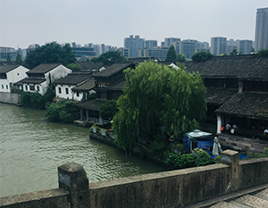
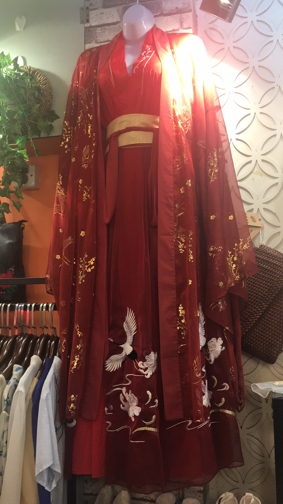

In the summer of 2019, Hangzhou residents saw a group of over 30 students of varying ethnicities traveling together. This was my study abroad group through CIEE, a non-profit organization who promotes international education and exchange. My group signed up to study Global Entrepreneurship in Shanghai, but we took a small 2 day 1 night trip to Hangzhou.
Hangzhou is the capital of Zhejiang province located in the southeastern part of China. This city is filled with rich history and is also the home of Alibaba, the Amazon of China. That was our priority in Hangzhou. However, before taking a day trip around Alibaba, our group explored Hangzhou. Our first destination was West Lake. The street around the lake was bustling with people and when our group got there, it was hard to keep everyone together. The view of Hangzhou from West Lake was breathtaking. Below are some pictures from the boat-ride.
In the afternoon, our group took a trip to Hefang Street. This is a street around 1,800 meters filled with shops where people (mainly tourists) can buy fans, food, clothing, and souvenirs. To the left is a photo of Chinese traditional clothing called hanfu. Here, the group was free to roam around and buy souvenirs if they choose to do so. My group of friends, consisting of three people, decided to get some food, then look around the area. One of my friends wanted to get something for their parents, so we set out on a small mission to find the best, but inexpensive item. It had to be useful and of good quality. We only had 2 hours to search and due to the immense amount of shops, it took us until the last minute to find the perfect item.
After our adventure around Hefang Street, our group boarded the bus to return to the hotel and rest for another day of exploring. The next morning, the group had breakfast in the hotel where it is included with the cost of the rooms. Around 10am, our group set off to a garden owned by Jack Ma, a co-founder of Alibaba Group. At the garden, we toured the area, did tai-chi with Jack Ma's instructor, had lunch, and received gifts. When we finished at the garden, the group was back on the road, but this time to Alibaba Hangzhou Headquarters. At the headquarters, we learned about Alibaba's history, mission, and the work they do. After the tour, the group went to the gift shop to rest and wrap up the Alibaba experience. Below are a few photos from the garden and Alibaba headquarters.